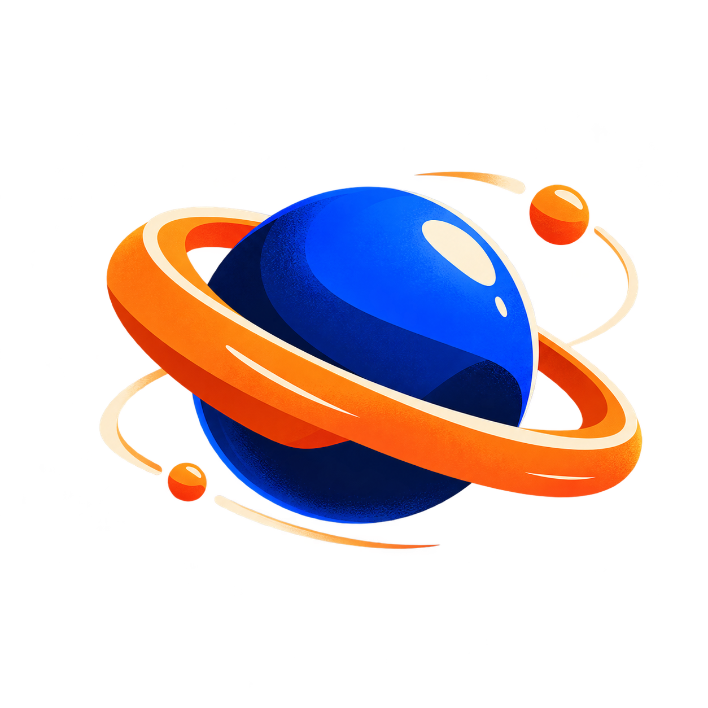

AI hızı, insan kontrolü.
Reklam filmi, görsel ve içerik üretimini yapay zekâyla hızlandırıyoruz. Her adım sizin onayınızdan geçer, hiçbir şey kontrolsüz yayına çıkmaz.

Bunları yaşıyorsanız, doğru yerdesiniz.
Sık gördüğümüz durumlar
- Reklam filmi bütçesi ve süresi kampanyayı yavaşlatıyor
- Çok kanallı içerik üretimi ekibi yoruyor
- AI ile üretimin kontrolünü kaybetmekten çekiniyorsunuz
AI üretimi hızlı, insan kararı net olur
- Brief’i senaryoya, sahneye ve kurguya çeviririz
- Üretimi kontrollü adımlarla ilerletiriz
- Her aşamada onayınızı alırız
Teslim ettiklerimiz.
Dört adımda, onayınızla.
İşe başlamadan önce kapsam, takvim ve bütçe yazılı olarak netleşir. Hiçbir iş onayınız olmadan ilerlemez.
Nasıl göründüğüne bakın.


Ne kadar, baştan net.
- Yazılı kapsam ve takvim
- Her adımda sizin onayınız
- Final dosyaların teslimi
- Revizyonlar kapsama göre teklifte yazılır
Fiyat nasıl belirlenir?
Kapsam, süre ve teslim formatlarına göre. Tanışma görüşmesinden sonra yazılı teklif alırsınız. Fiyatlara KDV dahil değildir.
Güvenle başlamanız için.
Başlamadan önce.
AI ile üretim güvenilir mi?
Her çıktı bir tasarımcı tarafından kontrol edilir. Sınırları ve uygun kullanım alanlarını teklifte açıkça yazıyoruz.
Fiyatlandırma nasıl yapılıyor?
AI reklam filmi için başlangıç fiyatı film başına 15.000 ₺’dir (KDV hariç). Kesin tutarı kapsam belirler.
Süreç ne kadar sürer?
Kapsama göre değişir. Takvim, tanışma görüşmesinden sonra teklifte yazılı gelir.
Hangi AI araçlarını kullanıyorsunuz?
Projeye göre değişir. Ana sayfamızda üretimde kullandığımız araçlar listelenir.
AI hızını, kontrolü kaybetmeden alın.
Hedefinizi kısaca yazın, aynı gün içinde dönüş yapalım.